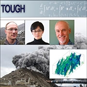

March 15–May 5, 2016
Golden, CO
Information about the Lab-Corps cohort 2 teams, their technologies, and how Lab-Corps is helping the teams fine-tune their commercialization approaches are highlighted here.
- Argonne National Laboratory — Nanoheatblock
- Argonne National Laboratory — Resin Wafer Electrodeionization
- Argonne National Laboratory — Smart Charge Adapter (Patent pending)
- Idaho National Laboratory — High-Moisture Pelleting Process
- Idaho National Laboratory — Quake
- Lawrence Berkeley National Laboratory — Bioalchemy, Inc.
- Lawrence Berkeley National Laboratory — Evodia
- Lawrence Berkeley National Laboratory — Tough
- Lawrence Livermore National Laboratory — Micro Miners
- Lawrence Livermore National Laboratory — Saline Solutions
- National Renewable Energy Laboratory — Biolyst Renewables
- National Renewable Energy Laboratory — Solguard
- Pacific Northwest National Laboratory — Volttron
- Sandia National Laboratories — Polymer Membranes
Argonne National Laboratory — Nanoheatblock
Team Members
Principal Investigator: Jie Lie, PhD., principal chemical engineer
Entrepreneurial Lead: Xiaojie (Alina) Yan, PhD, research and development staff
Industry Mentor: Carl Cobb, MBA and MS; Carl Cobb Consulting
Co-Principal Investigators:
Yugang Sun, PhD. and professor (Temple University)
Ralph Muehleisen, PhD., principal building scientist and technical leader
Leah B. Guzowski, energy scientist and the strategic program leader
Technology Description: NanoHeatBlock, an advanced processing technology, allows for the manufacturing of particulate thermochromic films, improving the performance of smart windows. Instead of using bulk VO2 film, Argonne has synthesized thin-film window coatings containing VO2 nanorods. The presence of the nanorods significantly enhances the optical and infrared blocking performance of the window coating. In addition, the technology is scalable, with the capacity of finely tuning material properties, producing high-quality window films at a low cost. If successful, it could result in a technical potential energy savings up to 2.64×1017 J/year for new and existing commercial and residential markets combined. With the help of Lab-Corps, the team hopes to explore various paths forward, demonstrate the processes, and bring the technology to market.
Argonne National Laboratory — Resin Wafer Electrodeionization
Team Members
Principal Investigator: Yupo Lin
Entrepreneurial Lead: Jessica Linville
Industry Mentor: Michael Gurin
Technology Description: Ion-exchange resin wafer electrodeionization (RW-EDI) is an energy-efficient, low-cost separation technology that directly utilizes electricity to remove ions from aqueous streams. It integrates commercially available components of ion-exchange resin material, membranes, and electrically driven separation devices to increase the energy efficiency and reduce the cost of processing aqueous streams. The technology offers enhanced fluid and flow distribution; higher conductivity; superior pH control; ease of materials handling and system assembly; and a porous solid support for incorporation of catalysts; biocatalysts; and other adjuvants. RW-EDI is a near commercial technology that won 2001 and 2006 R&D 100 Awards for chemicals/water purification and bio-based chemical/biofuel production.
Argonne National Laboratory — Smart Charge Adapter (Patent Pending)
Team Members
Principal Investigator: Jason Harper
Entrepreneurial Lead: Le Ge
Industry Mentor: Matt Raymond
Technology Description: The smart charge adapter (SCA - Patent Pending) is a handheld, internet of things (IoT) device connected between any charge station and plug-in electric vehicle (PEV). The SCA is PEV/charge station agnostic. The SCA provides communication, control, and monitoring capabilities for the charging session, providing incentives for the owner of the SCA and utility/grid operator. Potential applications include PEV submetering, demand response, frequency regulation, charge scheduling, and PEV charging data analytics. Lab-Corps will help the team assess if there is a market for the SCA technology, identify the best initial customer segment, and develop the most appropriate path to commercialization.
Idaho National Laboratory — High-Moisture Pelleting Process
Team Members
Principal Investigator: Jaya Shankar Tumuluru
Entrepreneurial Lead: Erica Belmont
Industry Mentor: Art Baker
Technology Description: Idaho National Laboratory has developed a high-moisture pelleting process that decreases the drying cost and manages the feedstock moisture more efficiently. Through this process, the biomass is pelleted at moisture contents greater than 25 percent. The pellets are partially dried during production by the frictional heat developed in the pellet die during compression and extrusion. Additionally, a short preheating step replaces the conventional, energy-intensive steam conditioning. This step helps reduce the feedstock moisture content as well as activate biomass components, like lignin. Techno-economic analysis indicated the process reduces energy and production costs by about 40 to 50 percent compared to a conventional pelleting method. Currently, scale-up of the high moisture pelleting process from lab to pilot and commercial scale is in progress.
Idaho National Laboratory — Quake
Team Members
Principal Investigator: Justin Coleman
Entrepreneurial Lead: Chandrakanth Bolisetti
Industry Mentor: Mark Kaczor
Technology Description: Currently, DOE and the nuclear industry perform seismic analysis using equivalent-linear numerical analysis tools. For large levels of shaking, where soil strains are high, these tools are likely inaccurate for seismic and flooding probabilistic risk assessment (PRA) calculations. This proposed technology, with advanced seismic methods and tools, will minimize uncertainty and reduce quantified safety margins and costs required to mitigate seismic hazards.
Lawrence Berkeley National Laboratory — Bioalchemy, Inc.
Team Members
Principal Investigator: Joshua Heinemann
Entrepreneurial Lead: Joshua Heinemann and Deepti Tanjore
Industry Mentor: Tom Anderson
Technology Description: The BioAlchemy team has developed a new microfluidic technology (microNIMS) for high-throughput screening of cellulose degrading enzymes. The technology merges microfluidics with mass spectrometry allowing fully automated enzyme processing and assay. Unlike traditional microfluidic detection systems, microNIMS can be used on a wide variety of different enzymes and substrates; and to solve multiple enzyme challenges across a broad range of pretreatment conditions and substrate options. The fabrication conditions can be modulated and tailored to target different enzyme/substrate systems. They can also be fabricated in patterned arrays, allowing multiple assays to be run simultaneously. The combined versatility, throughput, and reduced sample consumption make microNIMS an enabling technology for commercial enzyme assay.
Lawrence Berkeley National Laboratory — Evodia
Team Members
Principal Investigator: Robert Haushalter
Entrepreneurial Lead: Jorge Alonso‐Gutierrez
Industry Mentor: Todd Pray
Technology Description: Evodia is developing engineered microbes to convert inexpensive, renewable sugars into high-value specialty chemicals. Its platform technology will provide novel biosynthetic routes to compounds with established markets, and can be extended to produce novel compounds through simple genetic alterations in the host cell, all from a single inexpensive feedstock. Evodia's technology will therefore provide "greener" routes to established and novel products while lowering production costs.
Lawrence Berkeley National Laboratory — Tough
Team Members
Principal Investigators: Nic Spycher and Yinghi Zhang
Entrepreneurial Lead: Stefan Finsterle
Industry Mentor: Sabodh Garg
Technology Description: The TOUGH software simulates how valuable resources—such as water, oil, gas, and heat—can be extracted from the pore space of soils and rocks, or how harmful materials—such as chemical and radioactive wastes, or carbon dioxide—can be safely stored in the deep earth or tracked as they migrate through the subsurface. The team has developed, customized, and tested such simulation software and provided the expertise to address a wide variety of challenging environmental and energy problems. With the help of Lab-Corps, the TOUGH suite of codes may be positioned as the tool of choice for complex subsurface simulations in academia, government organizations, and industry.
Lawrence Livermore National Laboratory — Micro Miners
Team Members
Principal Investigator: Yongqin Jiao
Entrepreneurial Lead: Suzanne Singer
Industry Mentor: Roger Werne and Tony Lazar
Technology Description: The Micro Miners team develops and deploys innovative biotechnologies to sequester and recover rare earths from low-grade sources (e.g., mine tailings, geothermal fluids, and recyclable materials) for further diversifying the global rare earth supply chain. It focuses on research and development of cost-effective and eco-friendly approaches that rely on environmentally safe microorganisms. To increase efficiency and specificity of rare earth extraction, it utilizes both native microbial features as well as advanced bioengineering technologies. With the development of an extraction pipeline that promises the delivery of rare earth materials with high efficiency and purity, it addresses the vulnerability and criticality of rare earths to emerging clean energy technologies.
Lawrence Livermore National Laboratory — Saline Solutions
Team Members
Principal Investigator: Michael Stadermann
Entrepreneurial Lead: Tania Ryan
Industry Mentor: Jim Presley and Roger Werne
Technology Description: Flow-through electrode capacitive desalination (FTE-CD) is a novel desalination method that removes ions from water electrostatically and is best suited for low concentrations of salt (15 g/L or less). Potential applications for this technology are numerous, but it would most benefit the production of ultrapure water. Ultrapure water is required for the production of advanced electronics and pharmaceuticals, and as a working fluid for power plant turbines. It typically takes several steps to produce ultrapure water, which includes using reverse osmosis (RO) membranes to remove most of the salt. FTE-CD can remove salt much faster at low concentrations than RO can, reducing both capital cost and the energy cost of production. The overall savings are expected to be 30 percent. Upon success, the technology could expand into additional markets, such as brackish water desalination for municipal or agricultural use.
National Renewable Energy Laboratory — Biolyst Renewables
Team Members
Principal Investigator: Chris Johnson
Entrepreneurial Leads: Derek Vardon and Steve Christensen
Industry Mentor: Doug Henston
Technology Description: The team at Biolyst Renewables has developed technologies to produce adipic acid renewably at a competitive cost and lower environmental footprint than petroleum-derived adipic acid. Adipic acid is a primary component of nylon, and its production from petroleum releases significant quantities of nitrous oxide, a potent greenhouse gas nearly 300 times worse than carbon dioxide. Biolyst Renewables' approach overcomes this issue by producing adipic acid renewably from biomass at low cost and eliminating the release of nitrous oxide, resulting in one-tenth of the greenhouse gas footprint. With the help of Lab-Corps, the team hopes to understand barriers to entry for the rapidly growing bioplastics market and how to compete with petroleum products in an environmentally sustainable manner.
National Renewable Energy Laboratory — Solguard
Team Members
Principal Investigator: Michael Deceglie
Entrepreneurial Lead: Chris Deline
Industry Mentor: Anders Olsson
Technology Description: SolGuard's integrated photovoltaic (PV) safety and performance solution will provide remote shut-off capability of solar systems while giving owners automatic alerts of potential safety and energy-production problems. Electrical safety can discourage firefighters from intervening during a fire, and faults in the system can pose a fire risk. For module and inverter manufacturers, the technology enables sales of existing products into rooftop markets, which are quickly closing due to National Electric Code (NEC) regulations. For system owners, it offers compliance with upcoming NEC regulations and improved actionable information about system performance and problems associated with fire risk. Finally, for insurers / firefighters, it provides a decreased risk of PV system-started fires and improved firefighting response if a fire does occur.
Pacific Northwest National Laboratory — Volttron
Team Members
Principal Investigator: Jeremy Haake
Entrepreneurial Lead: George Hernandez
Industry Mentor: Jim Benson
Technology Description: VOLTTRON is an open-source platform for distributed sensing and control funded by DOE's Building Technologies Office. VOLTTRON enables rapid development and deployment of Smart Building solutions by allowing applications to easily communicate with physical devices and other resources.
Sandia National Laboratories — Polymer Membranes
Team Members
Principal Investigator: Cy Fujimoto
Entrepreneurial Lead: Jeffrey Nelson
Industry Mentor: Tom Brennan
Technology Description: Polymer membranes play a crucial function in many energy and water technologies, including energy storage, water electrolysis and purification, and stationary and transportation power systems. The membranes are tailored to allow conduction of specific ionic species between the negative and positive electrodes in an electrochemical system. For example, polymer membranes can be optimized for transport of protons (H+) or hydroxyl ions (OH-), depending on the acidic or alkaline environment of the energy-water system. The prototype poly (phenylene)-based hydrocarbon membrane separators developed at Sandia National Laboratories are showing exceptional performance in real-world application tests by system customers and partner research institutions.